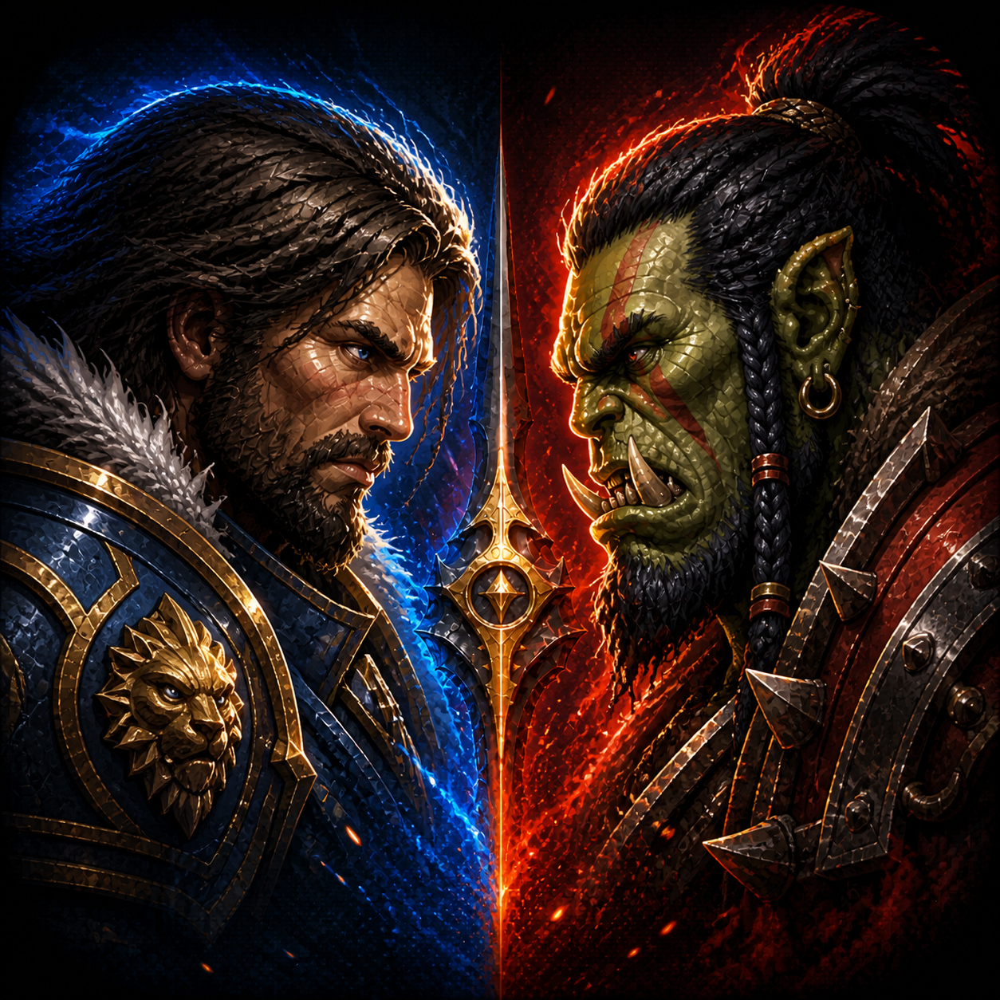
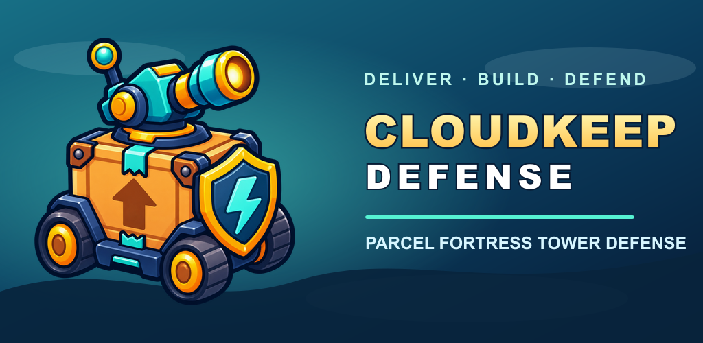

인생게임 · 학생키우기
학생으로 시작해 공부, 직업, 전투와 자산 성장으로 나만의 길을 만들어가는 방치형 RPG입니다.
Google Play ↗티오에프는 전략과 성장의 재미를 만드는 독립 게임 스튜디오입니다. Google Play에 출시한 세 게임을 바탕으로, AI를 활용한 개발과 더 풍부한 상호작용을 탐구합니다.
게임 살펴보기↘Claude 활용 계획 ↗
아이디어에서 실제 출시까지.
Google Play에서 만나보세요.
학생으로 시작해 공부, 직업, 전투와 자산 성장으로 나만의 길을 만들어가는 방치형 RPG입니다.
Google Play ↗
블록과 영웅으로 이동 요새를 만들고 적을 방어하세요. 나만의 배치와 성장 전략으로 전투를 이어가는 타워 디펜스 게임입니다.
Google Play ↗인간과 오크의 판타지 전장에서 군대를 성장시키세요. 병력과 장비를 강화하며 전투를 펼치는 전략 RPG입니다.
Google Play ↗티오에프(TEOPF)는 김성용이 운영하는 대한민국의 독립 모바일 게임 스튜디오입니다. 기획, 개발, 출시와 운영을 직접 진행하며, teopfgames 이름으로 게임을 선보입니다.
출시 경험을 다음 실험의 기반으로 삼습니다. Claude를 개발 과정에 활용하고, 게임 세계관에 맞게 반응하는 NPC와 분기형 이야기를 연구할 계획입니다.
코드 초안과 오류 분석, 회귀 테스트 작성, 다국어 문구 검토에 Claude를 활용할 계획입니다. 변경 사항은 개발자가 검토하고 실제 빌드와 플레이 테스트를 거쳐 반영합니다.
검증 기준: 작업 소요 시간, 테스트 통과 여부, 수정 후 재발 오류를 비교합니다.
게임 설정과 퀘스트 상태를 바탕으로 NPC 대화와 이야기 분기를 생성하는 실험을 계획하고 있습니다. 고정된 대사에 플레이어의 선택을 반영하는 상호작용을 더하는 것이 목표입니다.
검증 기준: 세계관 일관성, 응답 지연, 대화당 비용을 측정하고 실패 시 고정 대사를 제공합니다.
초기 범위는 한국 내 개발·테스트입니다. 게임 내 AI는 향후 실험 계획이며, 현재 출시작의 제공 기능이 아닙니다.
게임, 협업 또는 스튜디오에 관한 문의를 보내주세요.
official@teopf.com ↗